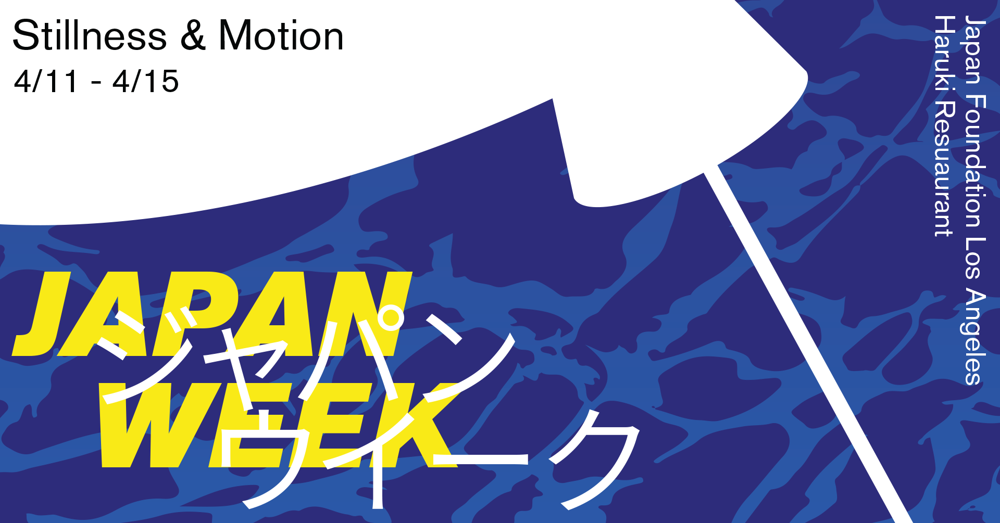

poster design for Brown University's Japan Week 2018
Part of the prompt for the poster was to integrate a sense of "Japanese-ness", but without making things too serious. Keeping that in mind, I decided to use an abstracted sillohuette of a Japanese Crane and moving water as the main motifs.

An unused Facebook event banner